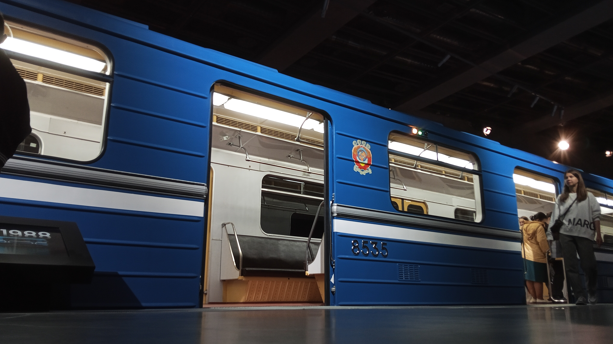
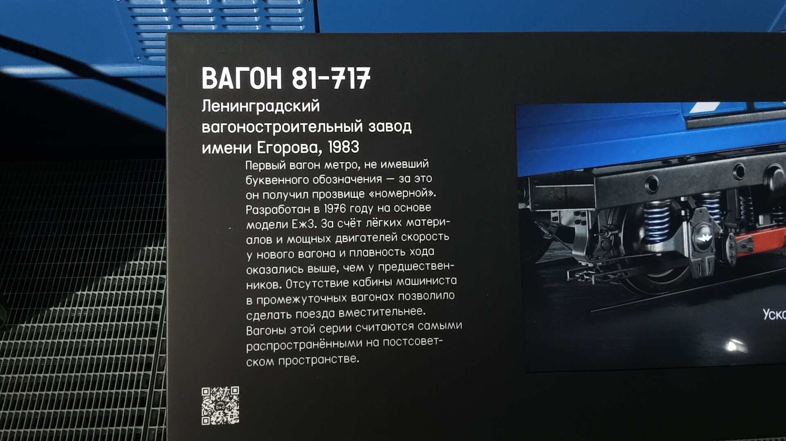
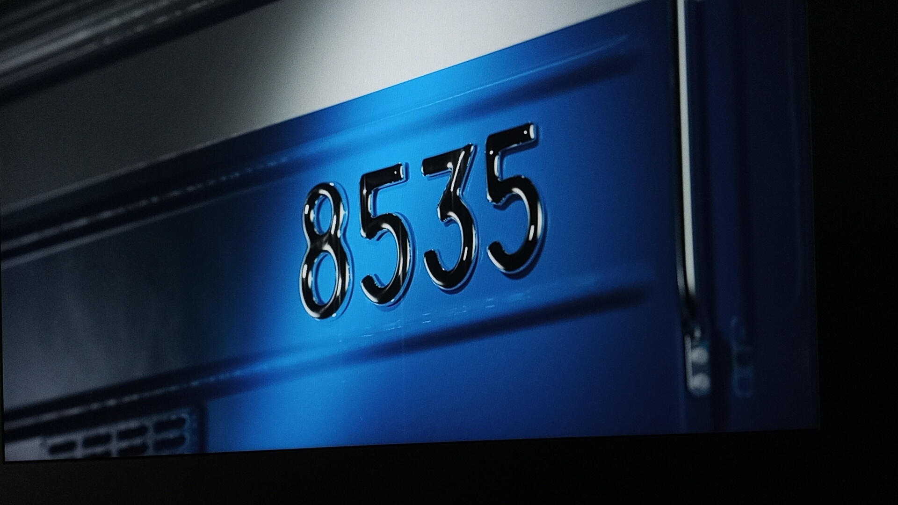
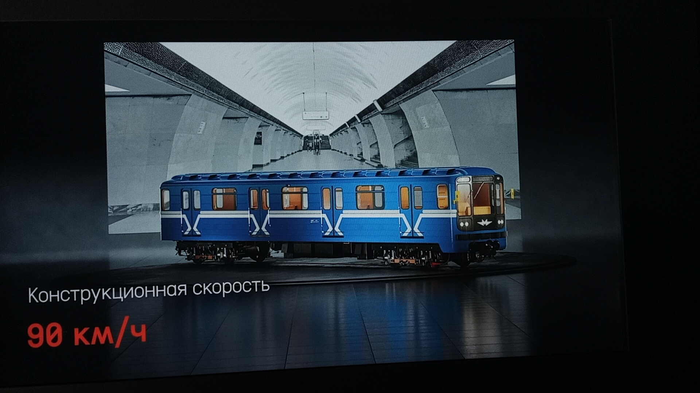

81-717 (ЛВЗ) №8535
Вагон 81-717 (ЛВЗ) №8535 — уникальный экземпляр легендарной серии «номерных» вагонов, выпущенный Ленинградским вагоностроительным заводом. После масштабной реставрации вагон занял почётное место в постоянной экспозиции Музея транспорта Москвы.
Общая информация
| Параметр | Значение |
|---|---|
| Город | Москва 🇷🇺 |
| Депо/Парк | Музей транспорта Москвы |
| Модель | 81-717 (ЛВЗ) |
| Заводской № | 20517 |
| Построен | 06.1983 |
| Текущее состояние | Не эксплуатируется |
| Назначение | Музейный |
Вагон №8535 — один из легендарных «номерных» вагонов, ставших самыми массовыми в истории метро. Выпускались с 1977 года, прозваны «номерными» за отсутствие буквенных обозначений.
История вагона
Поступление в депо
Вагон поступил в депо приписки ТЧ-2 «Сокол».
Капитальный ремонт
Вагон прошёл капитальный ремонт на ЗРЭПС.
Повреждение и отставка
Вагон повреждён и отставлен от эксплуатации с пассажирами.
Вагон-тренажёр
Использовался как тренажёр для обучения локомотивных бригад в ТЧ-6 «Планерное».
Реставрация
Вагон проходил восстановление на ВРК «Выхино».
Доставка в музей
Вагон доставлен в Музей транспорта Москвы для постоянной экспозиции.
Текущее состояние: Музейный экспонат
Реставрация
Процесс восстановления
Сотрудники Музея транспорта Москвы совместно с Московским метрополитеном провели масштабную реставрацию вагона.
- Удалены старые слои краски
- Восстановлена оригинальная цветовая схема
- Воссоздана пластиковая отделка салона с аутентичным узором
Использованные материалы
- Исторические фотографии из музея метро
- Чертежи из научно-технической библиотеки
- Архивные фото и документы
🏛️ Где находится: Вагон размещён на подземном уровне гаража Константина Мельникова (Новорязанская улица, 27) в экспозиции, посвящённой истории Московского метрополитена.
Фотогалерея

Вагон в музее.

Внутреннее убранство вагона.

Вид на вагон №8535 с уровня платформы.

Табличка о музейном экспонате.

Кадр из видео о модели 81-717.

Кадр из видео о модели 81-717.
Нажмите на фото для увеличения
«Музей Транспорта Москвы при участии сотрудников Московского метрополитена завершил реставрацию вагонов "Еж3" и "Номерной". Именно они перевозили, а некоторые до сих пор перевозят пассажиров метро».